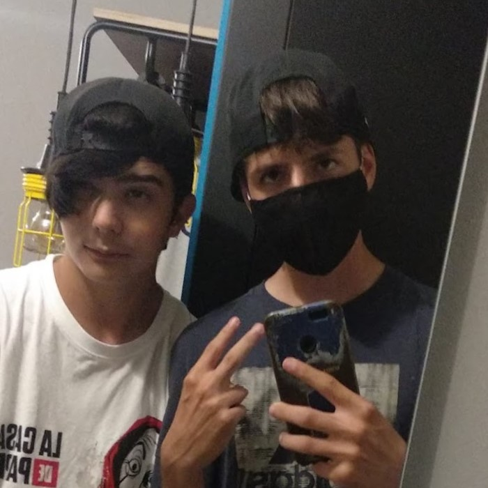

Ridolfi. Tante avventure durante il viaggio all'estero.
8/07/2021. Inizia il viaggio d'affari del Capo Ridolfi, e di certo non mancano le controversie che lo hanno coinvolto nei 15 giorni di "vacanze".
üïë 10 luglio 2021
È partito alle 12:45 dall'aereoporto sotterraneo nei pressi di Perchia il jet privato di
Vento,
la linea aerea di Ridolfi. A bordo il suddetto CEO dell'impresa, che già irritato dal necessario
ritardo della partenza, intendeva raggiungere il prima possibile la meta, Barcellona.
Lì lo aspettava il sottoscritto, con tanto di troupe di
Webeee,
che avendo preso un semplice aereo di linea,
era arrivato lì qualche ora prima. Insomma, tra esami irritanti, responsabili esigenti
e restrizioni di ogni tipo, sin da subito si preannunciava un viaggio un po' insidioso per
Ridolfi.
A tal proposito non si può non raccontare un episodio un po' particolare.
«Insomma, eravamo usciti na sera, - cioè, ci portavano in giro, pareva de esse un gregge de pecore
- stavamo a cammina' e a na certa Ridolfi se ritrova a cammina dietro certi, a un tratto sente che
qualcuno je sta proprio appiccicato e lui, o sapete com'è fatto, fa mpo' quello che je pare.
Fa' pe da na ginocchiata a quello avanti pe fallo move, ma non era uno de quelle colonnine basse
che mettono per terra per non fa passa le macchine... "Che dolore!" ha cominciato a fa,
"Stu shtupidu m'ha azzoppato!" Insomma stava a impreca' tutti li santi, l'angeli, li serafini
(me pare che c'ha invocato pure Ponziano, chi lo sa che c'azzeccava). Al che je faccio
"O Lessa' ma era un palo!" "Ah non me frega niente, a Baiano ste cose non succedono,
mo je faccio causa a sti Spagnoli." E me insiste che è normale eh... Comunque a parte il
fatto che momenti 'o prendono sotto co la macchina non è successo più gnente quella sera,
come se sta' co lui già non bastasse.»
Povero il nostro Presidente. A quanto però si è subito ripreso e nei giorni successivi
è riuscito qualche impresa davvero eccezionale. Torniamo a Minestrini che ci racconterà nel dettaglio.
«Ancora voi? C'arfate cavallo? Vabbè, questa ve la devo dì. Siccome do stavamo noi a dormi
la notte facevano la ronda e non se poteva fa gnente, avemo architettato un piano per incontracce senza facce vede.
Facile no? Manco pe gnente! Stavamo su due palazzine separate. Allora emo detto: famo finta che
si uno straniero e devi porta' via qualche cosa. Detto fatto, a mezzanotte e mezza me manda na
foto de lui col cappello mio e a busta dei panni sporchi. Insomma, cala giù co l'ascensore che
je avevo già chiamato e tra na cosa e n'altra arriva lì da me. Dopo 5 minuti arriano a bussa quelli de la ronda,
l'ho dovuto fa nasconne dentro al bagno e quando l'hanno scoperto ho detto che era quella che puliva...
A sera dopo sempre lì, stavolta la valigia se era portato. Avevamo migliorato il piano e era impossibile scopricce.
E così è stato. Je l'avevamo fatta, avevamo battuto il sistema. Mo ve saluto che anche io c'ho le faccende mie."
"Grazie mille, la contatteremo per altre testimonianze."
"Sci, semme." »

Così ci congedò la nostra fonte, insieme alle foto del viaggio,
che saremo lieti di pubblicare nella nuova sezione dedicata nella nostra
Gallery